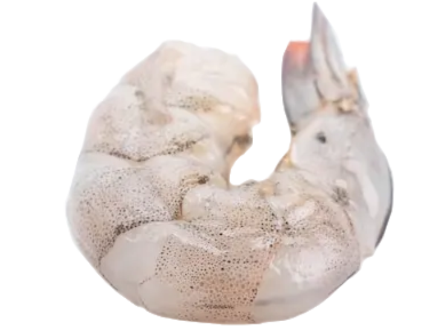

Retour en mars
Mars 2026 - Édition #3

Bonjour à toutes et tous, fidèle lectorat !
Mars 2026 marque une nouvelle étape pour notre journal. Après les premières éditions d’automne, nous revenons avec des sujets encore plus variés et un regard curieux sur le monde qui nous entoure. Ce mois-ci, nous parlons de culture, de science, et de petites histoires locales qui font la richesse de notre quotidien.
Nous espérons que ce numéro vous apportera autant de plaisir à lire qu’il nous a apporté de plaisir à écrire. Merci de continuer cette aventure avec nous, et à très vite pour de nouvelles découvertes.
-L'équipe de rédaction